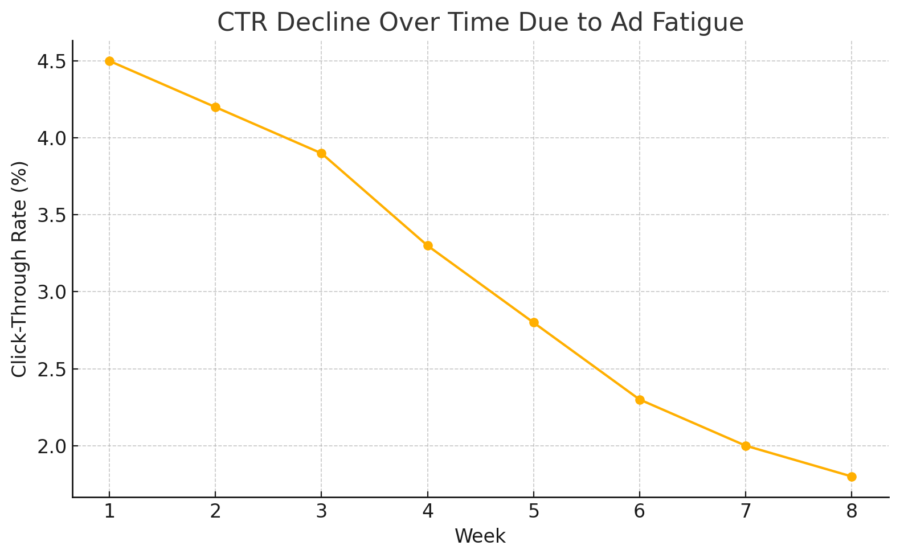

Ever feel like your ads just aren’t landing the way they used to? The targeting is solid, the copy sounds right, and your offer makes sense — but clicks are slowing down. Sound familiar?
You’re likely seeing what happens when your audience starts to tune out. Not because your message is wrong — but because they’ve seen it too many times.
People Don’t Hate Ads — They Hate Repetition
In today’s attention economy, users are exposed to thousands of messages every day. Over time, even a great ad can start to fade into the background. Psychologists call it habituation. In marketing, we call it ad fatigue — when performance drops because people have seen the same message too often.
It’s closely tied to banner blindness — where users instinctively ignore anything that looks LOT 1like an ad, especially one they’ve seen before.
The Google Ads Problem
When your campaign starts to blend in, here’s what usually happens:
- Click-through rates (CTR) start dropping
- Quality Scores dip
- Your cost-per-click goes up
- And ultimately — you get fewer results for the same (or more) money
This is especially true in Google Ads, where performance data updates fast and competition is always evolving.
.png)
How We Handle This at GrossiWeb
At GrossiWeb, we treat paid ads like living systems — not set-it-and-forget-it projects. That means we’re constantly analyzing, adjusting, and refreshing your campaigns so they stay sharp.
Here’s how we fight creative fatigue in Google Ads:
- Creative Rotation: We build multiple versions of each ad and rotate them frequently.
- A/B Testing: We test everything — from button text to headlines — to see what actually gets attention.
- Audience Segmentation: We match the message to the moment, customizing for different audience behaviors.
- Performance Monitoring: We look for early signs of drop-off and pivot fast — before your ROI suffers.
How AI Powers Our Fight Against Ad Fatigue
In the fast-moving world of digital marketing, staying ahead requires more than just creativity — it demands smart technology. That’s where AI comes in. At GrossiWeb, we use AI as a powerful tool to supercharge our strategies and keep your ads performing at their peak.
Here’s how AI enhances our approach:
- Predictive Analytics: AI helps us forecast when ad fatigue might set in, so we can refresh creatives before your audience even starts to tune out.
- Automated A/B Testing: AI speeds up our testing process, analyzing results in real-time to identify the best-performing ads faster than ever.
- Personalized Ad Delivery: AI-driven insights allow us to deliver the right message to the right person at the right time, reducing fatigue by making ads feel fresh and relevant.
But here’s the thing: AI is just a tool. It’s our team’s expertise that makes it work. We know how to interpret the data, craft the creatives, and adjust the strategy to deliver results. With GrossiWeb, you get the best of both worlds — cutting-edge technology and human insight.

What This Means for You
If your ads are getting less engagement, the fix might not be a total overhaul — it might just be a fresh idea, a sharper hook, or a tweak to the message. Sometimes, a small change is all it takes to reboot performance.
That’s what we help clients do every day.
Want to Keep Your Ads Fresh?
We get it — digital ad space moves fast. But that’s exactly why your strategy has to move faster. If your Google Ads are slowing down or starting to blend in, let’s talk about what’s next. With GrossiWeb’s expert team and AI-powered tools, we’ll keep your campaigns sharp, relevant, and delivering results.